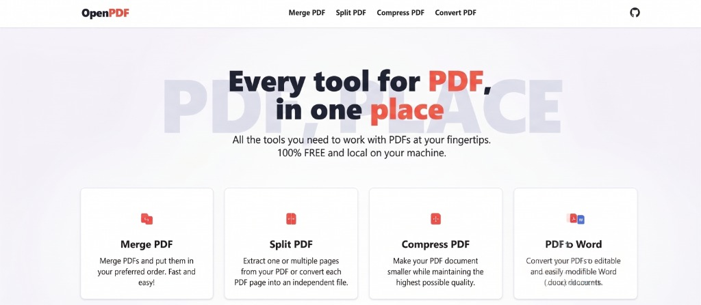

Une, divide, convierte y protege tus archivos PDF sin depender de la nube. Arquitectura de grado empresarial, 100% código abierto y sin conexión a internet.

Todo lo que necesitas en una sola aplicación de escritorio hermética.
Tus documentos nunca salen de tu computadora. Zero tracking, zero analíticas de terceros. Lo local se queda local.
Procesamiento acelerado por PyMuPDF y FastAPI. Convierte, divide y haz OCR en milisegundos sin bloqueos en la interfaz.
Licencia MIT. El código fuente está expuesto para ser auditado, mejorado o bifurcado por la comunidad.